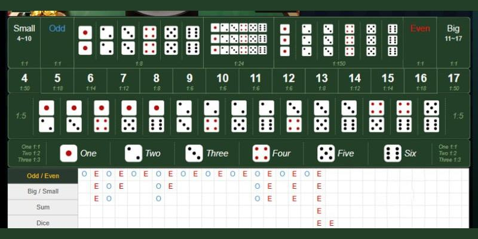

Muốn làm tỷ phú với bảng cầu tài xỉu nhất định phải biết 6 điều này
Hiện nay nhu cầu cá cược của nhiều người ngày càng cao, chính vì vậy trong nội dung bài viết sau F8bet sẽ đề xuất 12 sòng bạc trực tuyến Casino Online uy tín ăn tiền để bạn có một cái nhìn tổng quát hơn trước khi tiến hành lựa chọn.
Bảng cầu tài xỉu là gì?
Hầu hết mọi người thường nghĩ rằng đây chỉ là một trò chơi cờ bạc may mắn và thường hay đặt cược một
cách tùy tiện. Tuy nhiên, để đạt chiến thắng, bạn cần hiểu rõ phương pháp tính toán bảng cầu Tài Xỉu
và nắm bắt cách phân tích một cách chính xác.
Dựa vào bảng cầu Tài Xỉu bạn sẽ có thể dự đoán kết quả một cách chính xác. Đây là một chiến thuật đã
được kiểm chứng và rút ra từ kinh nghiệm cá cược của nhiều cao thủ trong lĩnh vực này. Khi đã hiểu
rõ về khái niệm này một cách chính xác, bạn sẽ dễ dàng nhận ra các quy luật trong trò chơi, từ đó
bạn sẽ có cơ sở đủ để đặt cược theo chiến lược thay vì chỉ dựa vào cảm tính như trước đây.
Bảng cầu tài xỉu là một trong những kỹ thuật phân tích dự đoán kết quả chính xác tới 99%
Một số loại bảng cầu tài xỉu phổ biến trên thị trường hiện nay
Trước khi khám phá những cách tối ưu hóa cơ hội chiến thắng, bạn cần hiểu đặc điểm của các loại bảng cầu tài xỉu thường xuất hiện như sau:
Cầu Tài Xỉu dạng 1 – 1
Cầu Tài Xỉu dạng 1-1 là một trong những dạng phổ biến hiện nay, nó thường có cách chơi giống như cầu bệt. Theo chuyên gia, loại cầu này sẽ xuất hiện liên tiếp trong khoảng 3 đến 4 ván, với sự xen kẽ giữa Tài và Xỉu. Việc này sẽ giúp bạn tăng khả năng nhận biết và nắm bắt xu hướng trong quá trình cá cược.
Xem thêm: Đề Xuất 12 Sòng Bạc Trực Tuyến Casino Online Uy Tín Ăn Tiền Năm 2024
Cầu Tài Xỉu dạng 1 – 2 – 3 (3 – 2 – 1)
Cầu Tài Xỉu 1-2-3 đề cập đến trường hợp 3 Xỉu – 2 Tài – 1 Xỉu hoặc 3 Tài – 2 Xỉu – 1
Tài. Sau 5 ván (3 – 2), người chơi Tài Xỉu có thể nhận biết rõ ràng loại cầu đang diễn ra.
Phương pháp này dễ thực hiện, chỉ cần bạn theo dõi kết quả của 5 ván liên tiếp, bạn sẽ có thể xác
định được xu hướng và áp dụng chiến thuật cược phù hợp. Vì tính đơn giản và hiệu quả, nhiều người
chơi thường ưa chuộng sử dụng kỹ thuật này để tăng cơ hội thắng lớn.
Cầu bệt Tài hoặc Xỉu
Cầu bệt Tài Xỉu xảy ra khi Tài hoặc Xỉu liên tiếp trong các ván chơi. Việc nhận diện dạng này khá dễ dàng và người mới cũng có thể thực hiện ngay lập tức. Bạn chỉ cần theo dõi kết quả các ván chơi và đánh giá xem có sự liên tiếp giữa Tài hoặc Xỉu hay không. Phương pháp soi cầu này không chỉ đơn giản mà còn mang lại hiệu quả lớn, giúp bạn nhanh chóng nhận biết xu hướng và đưa ra quyết định cược phù hợp.
Cầu bệt Tài hoặc Xỉu được đánh giá là rất đơn giản ngay cả người mới cũng có thể thực hiện
Tổng hợp 6 phương pháp soi bảng cầu tài xỉu chuẩn xác nhất
Hiểu đúng cách soi bảng cầu Tài Xỉu là chìa khóa giúp người chơi tăng cơ hội thắng trong trò chơi. Dưới đây là những phương pháp cụ thể mà chúng tôi đã tổng hợp:
Soi bảng cầu Tài Xỉu dạng "bệt"
Khi áp dụng phương pháp "bệt" Tài Xỉu, người chơi nên đặt cược mạnh ở đầu chuỗi cầu. Trong giai đoạn giữa và cuối chuỗi, cân nhắc đánh đều tay và tăng cường vào ván cuối trước khi đổi cầu như áp dụng kỹ thuật gấp thếp. Chiến thuật này tận dụng sự thay đổi xu hướng trong chuỗi cầu để tối ưu hóa lợi nhuận, giúp người chơi đảm bảo quản lý vốn và tăng cơ hội chiến thắng.
Bảng cầu Tài Xỉu theo nhịp
Cầu Tài Xỉu theo nhịp trở nên rõ ràng sau 5 phiên (3-2). Một chiến thuật hiệu quả là người chơi nên cẩn trọng, đánh đều ở những phiên đầu để đọc hiểu xu hướng. Sau khi đã nắm bắt thông tin, họ có thể tăng cường cược mạnh ở phiên cuối để tận dụng lợi nhuận tốt nhất từ sự biến động của bảng cầu. Kỹ thuật này sẽ giúp bạn áp dụng một chiến lược linh hoạt và có hiệu suất trong các phiên chơi tiếp theo.
Bảng cầu theo dạng chuỗi 1-1
Tương tự như phương pháp "bệt", chiến thuật cầu Tài Xỉu dạng chuỗi 1-1 yêu cầu người chơi áp dụng cách đánh "bệt" và tập trung cược mạnh ở đầu chuỗi. Sau khi đã đánh giá được xu hướng và biến động, bạn có thể tiếp tục kỹ thuật gấp thếp Tài Xỉu ở giai đoạn sau của chuỗi. Việc này giúp bạn tận dụng mối liên quan giữa các ván chơi để có cơ hội tối ưu nhất cho chiến lược cược của mình.
Bảng cầu Tài Xỉu dạng đảo
Chiến thuật cầu đảo đoán ngược hoàn toàn so với xu hướng trước đó, đòi hỏi người chơi
phải bắt kịp thời điểm để thắng lớn, với khả năng thắng cao có thể từ 80 đến 99%.
Ví dụ, khi chơi theo dạng cầu 1 – 2 – 3 và cuối cùng cầu quay trở lại vị trí ban đầu, người chơi có
thể đặt cược theo chiến thuật đảo ngược để tối ưu lợi nhuận trong những ván chơi tiếp theo. Đây là
một cách tiếp cận linh hoạt, giúp bạn tận dụng được sự biến động của bảng cầu.
Soi cầu Tài Xỉu dựa vào cảm xúc
Phương pháp đặt cược bảng cầu Tài Xỉu theo cảm xúc là đơn giản nhất. Trong tình huống bất ngờ, nếu ban đầu quyết định đánh Tài (hoặc Xỉu), người chơi có thể linh hoạt chọn ngược lại theo cảm xúc cá nhân. Chiến thuật này phụ thuộc vào khả năng quản lý tâm lý và đưa ra quyết định nhanh chóng, mang lại sự linh hoạt và cơ hội thích ứng trong môi trường cá cược.
Kỹ thuật cược theo cảm xúc được coi là dễ áp dụng nhất vì bạn có thể linh hoạt với lựa chọn của mình
Soi cầu Tài Xỉu theo đối xứng
Phương pháp này sẽ hiệu quả khi các trận đấu có sự đối xứng qua một điểm đặc biệt, ví dụ như tỷ số 1-5 và trận đấu đối đầu có tỷ số 5-1. Loại cầu này linh hoạt và có thể được tạo ra thông qua nhiều thuật toán trực tuyến khác nhau, nhưng phát hiện chúng có thể mất thời gian.
Xem thêm: Tổng quan về game tài xỉu tiền ảo và mẹo chơi thắng lớn
Lời kết
Trên đây là những chiến thuật và phương pháp quan trọng trong bảng cầu Tài Xỉu. Bắt đầu với việc hiểu rõ những loại cầu khác nhau, kết hợp với chiến lược cược linh hoạt và quản lý vốn thông minh bạn sẽ có thể nâng cao khả năng chiến thắng của mình. Đây không chỉ là trò chơi may rủi mà còn là nơi để bạn thể hiện sự tinh tế và cách áp dụng chiến lược thông minh.